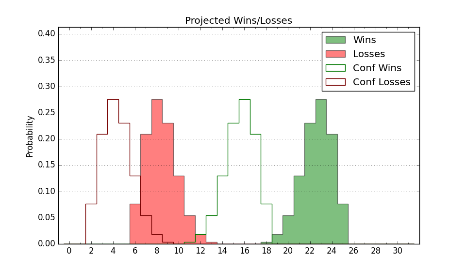

| Home | Game Probabilities | Conferences | Preseason Predictions | Odds Charts | NCAA Tournament |
| City: | New Rochelle, New York | |
| Conference: | Metro Atlantic (2nd)
| |
| Record: | 5-2 (Conf) 12-6 (Overall) | |
| Ratings: | Comp.: 11.0 (76th) Net: 11.5 (73rd) Off: 107.4 (69th) Def: 96.0 (90th) SoR: 6.9 (112th) |
| Remaining | ||||||
|---|---|---|---|---|---|---|
| Date | Opponent | Win Prob | Pred. | |||
| 1/20 | @ Manhattan (327) | 87.7% | W 79-65 | |||
| 1/27 | @ Siena (177) | 62.3% | W 74-71 | |||
| 1/29 | Quinnipiac (130) | 78.5% | W 77-68 | |||
| 2/3 | Mount St. Mary's (262) | 92.7% | W 76-58 | |||
| 2/5 | @ Fairfield (244) | 76.1% | W 72-64 | |||
| 2/10 | @ Canisius (249) | 77.3% | W 75-66 | |||
| 2/12 | @ Niagara (239) | 74.4% | W 69-62 | |||
| 2/17 | Manhattan (327) | 96.1% | W 83-61 | |||
| 2/19 | @ Saint Peter's (334) | 88.8% | W 72-58 | |||
| 2/24 | @ Mount St. Mary's (262) | 78.8% | W 72-63 | |||
| 2/26 | Siena (177) | 84.9% | W 79-66 | |||
| 3/2 | Marist (290) | 94.0% | W 77-58 | |||
| 3/4 | @ Rider (233) | 73.5% | W 75-68 | |||
| Previous | Game Score | |||||
| Date | Opponent | Win Prob | Result | Off | Def | Net |
| 11/7 | Penn (187) | 85.9% | W 78-50 | -7.8 | 22.2 | 14.3 |
| 11/11 | @Hofstra (115) | 47.6% | L 78-83 | 13.5 | -15.6 | -2.0 |
| 11/18 | (N) Vermont (179) | 75.6% | W 71-50 | 3.2 | 18.5 | 21.8 |
| 11/27 | (N) Santa Clara (79) | 52.2% | L 76-86 | -2.0 | -13.1 | -15.1 |
| 12/2 | Niagara (239) | 90.8% | W 78-56 | -0.2 | 6.5 | 6.3 |
| 12/4 | Canisius (249) | 92.0% | W 90-60 | 12.3 | 7.4 | 19.6 |
| 12/6 | Saint Louis (93) | 70.9% | W 84-62 | 3.8 | 11.9 | 15.8 |
| 12/11 | (N) St. Bonaventure (170) | 73.8% | W 72-57 | -6.4 | 15.5 | 9.1 |
| 12/13 | (N) Princeton (97) | 58.1% | W 70-64 | 8.1 | -5.6 | 2.5 |
| 12/18 | @New Mexico (57) | 28.8% | L 74-82 | -1.7 | -2.7 | -4.4 |
| 12/22 | (N) SMU (203) | 79.6% | L 81-85 | 2.3 | -18.6 | -16.3 |
| 12/23 | (N) Seattle (133) | 66.5% | W 83-72 | 2.3 | 6.0 | 8.3 |
| 12/25 | (N) Pepperdine (139) | 67.6% | W 76-66 | -3.9 | 8.7 | 4.8 |
| 1/1 | Saint Peter's (334) | 96.4% | W 73-55 | 8.9 | -9.9 | -1.0 |
| 1/6 | @Marist (290) | 82.2% | W 84-57 | 20.7 | 5.7 | 26.4 |
| 1/8 | @Quinnipiac (130) | 51.7% | L 58-81 | -23.5 | -4.4 | -27.8 |
| 1/13 | Fairfield (244) | 91.5% | W 75-69 | -0.3 | -19.4 | -19.7 |
| 1/15 | Rider (233) | 90.4% | L 67-70 | -16.2 | -5.4 | -21.7 |
| Stats & Trends | |||||
|---|---|---|---|---|---|
| Current | Day | Week | Month | Season | |
| Composite | 11.0 | +0.3 | -1.7 | -2.8 | +6.6 |
| Comp Rank | 76 | -2 | -12 | -16 | +39 |
| Net Efficiency | 11.5 | +0.3 | -2.3 | -5.7 | -- |
| Net Rank | 73 | +1 | -18 | -26 | -- |
| Off Efficiency | 107.4 | +0.2 | -0.7 | -1.5 | -- |
| Off Rank | 69 | +5 | -13 | -14 | -- |
| Def Efficiency | 96.0 | +0.1 | -1.6 | -4.2 | -- |
| Def Rank | 90 | +2 | -21 | -41 | -- |
| SoS Rank | 212 | +17 | -46 | -76 | -- |
| Exp. Wins | 22.6 | +0.0 | -1.2 | -2.0 | +3.2 |
| Exp. Conf Wins | 15.6 | +0.0 | -1.2 | -1.7 | +1.8 |
| Conf Champ Prob | 74.3 | +1.2 | -11.1 | -19.8 | +30.2 |

| Advanced Stats | ||
|---|---|---|
| Stat | Value | Rank |
| Off Eff FG % | 0.525 | 98 |
| Off Ast Ratio | 0.164 | 30 |
| Off ORB% | 0.317 | 62 |
| Off TO Rate | 0.150 | 69 |
| Off FT Ratio | 0.252 | 327 |
| Def Eff FG % | 0.471 | 79 |
| Def Ast Ratio | 0.130 | 152 |
| Def ORB% | 0.272 | 192 |
| Def TO Rate | 0.178 | 90 |
| Def FT Ratio | 0.366 | 291 |